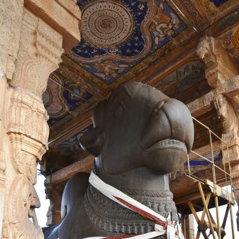
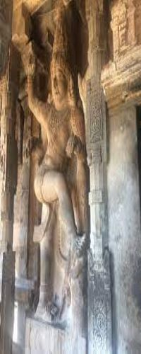
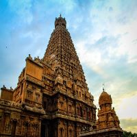
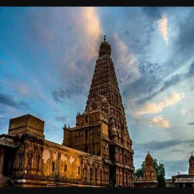

Slide in on Scroll
Thanjavur or Tanjore is the cultural hub of Tamil Nadu. This city was ruled by numerous dynasties in the past. And hence, was the centre of art, architecture and religion for centuries. A foremost example of the amalgamation of it’s art, architecture and religion is the Brihadishvara Temple.
And many visit this town today just to visit this temple. Although it is one of the largest Hindu temples in India. But, there are many more interesting facts about Brihadeeshwara Temple Thanjavur that make it so unique.
Let us take a quick tour of Thanjavur Brihadeeshwara Temple
The Brihadeeshwara Temple was constructed in 11th centuary, almost 1000 years back! Although not as old as the Mahabalipuram Temples, but definitely older than Meenakshi Temple. And it reflects the dravidian style of architecture. Huge towers, tall gopuram (tower), huge campus, several shrines around the main shrine
After crossing the gates, as you enter inside, the first massive structure you will see is the monolith Nandi, one of the largest in South India.Behind the Nandi, after walking several yards, right in the center of the courtyard sits the main temple, the sanctum of Shiva – Sri Vimana. The major sculptures seen on the walls of this temple represent different forms of Shiva and Parvati
There is a courtyard that runs all along the boundary of Brihadeeshwara Temple. It contains several important deity shrines. It also has several murals and paintings. And also 108 Shivlingas established by maratha king Saraboji.
The temple was built, damaged, restored several times. Several important dynasties including the Cholas, Marathas and Nayakas have contributed to the architecture of the Brihadwwshwara Temple of Tanjore. Having done a small virtual tour of the Brihadeeshwara Temple Thanjavur and admired it’s architecture. Let’s now dive into the intriguing facts about this temple.
No cement, soil or any other binding agent is used in the structure of Brihadeeshwara Temple !! Another genius of the architecture of Brihadeeshwara Temple. So, you might be thinking how does the massive structure of this temple stand. Well, the whole temple is built with strong interlocking stones. Without the use of any binding agents!

The Big Temple in Thanjavur, also known as Brihadeeswarar Temple, is an iconic Hindu shrine built in the 11th century by the Chola dynasty. The temple is famous for its grand entrance, which is an architectural marvel, displaying the rich cultural heritage of South India. The towering entrance, with its intricate carvings, is a testament to the advanced engineering skills of the Chola dynasty and serves as a symbol of their power and wealth. Visitors are left in awe by the magnificence of the entrance, which sets the tone for the rest of the temple's grandeur.The temple is dedicated to Lord Shiva and is one of the largest temples in India. The main entrance, known as the Rajagopuram, stands at an impressive height of 66 meters and is adorned with stunning sculptures of Hindu deities and mythical creatures.
The monolith Nandi, also known as the Nandikesvara, is a large stone sculpture of the sacred bull Nandi, which is located at the Brihadeeswarar Temple in Thanjavur, India. Nandi is considered to be the mount or vehicle of Lord Shiva and is revered as an important symbol in Hinduism. The Nandi at the Brihadeeswarar Temple is particularly significant, as it is one of the largest Nandi sculptures in India, standing at an impressive height of 2.1 meters and weighing around 20 tons. The monolith is carved from a single stone and depicts Nandi in a seated posture, facing the shrine of Lord Shiva. Visitors to the temple often offer prayers and offerings at the Nandi, seeking blessings and divine protection. The impressive size and intricate details of the Nandi are a testament to the skills of the Chola dynasty's sculptors and serve as a symbol of their devotion to Lord Shiva. The Nandi at the Brihadeeswarar Temple is a true work of art, featuring intricate carvings and details, including intricate muscle definition, curled tail, and a serene expression. It is said to have been carved during the reign of Raja Raja Chola I, the great Chola king who commissioned the construction of the temple. The Nandi is considered to be an important architectural element of the temple, as it serves to balance the overall design and symmetry of the shrine. The Nandi is also a testament to the importance of Nandi in Hinduism, as well as the deep reverence that the Chola dynasty held for Lord Shiva. The monolith Nandi remains one of the most popular attractions at the Brihadeeswarar Temple, drawing thousands of visitors from around the world each year. The Nandi at the Brihadeeswarar Temple is a remarkable example of Chola dynasty's art and architecture, showcasing the advanced skills and techniques used by their sculptors. The monolith is made of a type of granite known as Chola granite, which was sourced from the nearby quarries and transported to the temple site. The Nandi was carved using simple hand tools, such as hammers, chisels, and drills, and is a testament to the strength and skill of the Chola dynasty's artisans. The Nandi is also significant for its size, as it is one of the largest Nandi sculptures in India.
The Brihadeeswarar Temple in Thanjavur, India, is famous for its intricate carvings and sculptures, including a number of magnificent Bharatanatyam sculptures. Bharatanatyam is a classical dance form that originated in the Indian state of Tamil Nadu and has a long history of association with Hindu temples.The sculptures at the Brihadeeswarar Temple depict various scenes from Hindu mythology and folklore, including gods and goddesses, mythical creatures, and scenes from Hindu epics such as the Ramayana and Mahabharata. The Bharatanatyam sculptures at the Brihadeeswarar Temple are considered to be some of the finest examples of this art form, showcasing the advanced skills and techniques of the Chola dynasty's sculptors. The sculptures are made of granite and feature intricate details, such as delicate facial expressions, flowing clothing, and fluid movements. These sculptures serve not only as works of art, but also as visual representations of Hindu mythology, helping to preserve the stories and traditions of Hinduism for future generations.Visitors to the Brihadeeswarar Temple are often awed by the beauty and grace of the Bharatanatyam sculptures, which serve as a testament to the rich cultural heritage of South India and the devotion of the Chola dynasty to Hinduism. These sculptures continue to inspire and delight visitors from around the world, and are considered to be an important part of the temple's rich history and cultural heritage.In addition to the beauty and artistry of the Bharatanatyam sculptures at the Brihadeeswarar Temple, they also hold significant religious and cultural significance.
The Brihadeeswarar Temple in Thanjavur, India is famous for its unique architectural feature, as it is said that the temple does not cast a shadow at noon on the day of the summer solstice. This has been a source of wonder and awe for visitors for centuries, and has been the subject of much speculation and scientific investigation.The reason for this phenomenon is believed to be due to the precise alignment of the temple with the sun, as well as the specific angles and proportions used in the temple's construction. It is said that the temple was built to honor Lord Shiva, who is associated with the sun, and the absence of a shadow is seen as a symbol of his power and presence. Scientists have studied the temple and have confirmed that it does, in fact, experience this shadowless phenomenon. Some have even claimed that the temple's alignment with the sun and its specific proportions are so precise that it could have been used as a solar observatory. Regardless of the science behind it, the shadowless feature of the Brihadeeswarar Temple remains a source of fascination and inspiration for visitors and locals alike. It serves as a testament to the advanced architectural skills of the Chola dynasty, as well as to the deep spiritual and cultural significance of the temple.